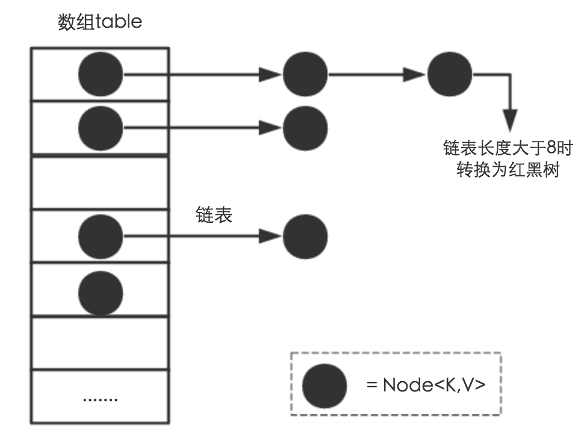
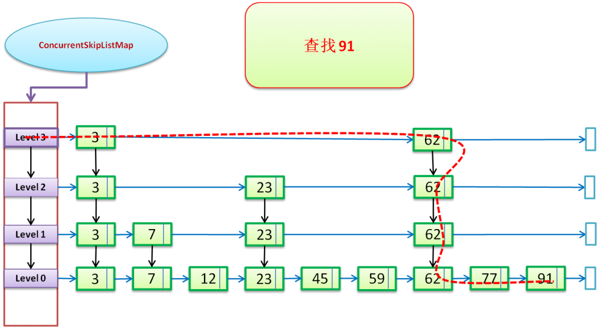

1 总览1 HashMap1.1 存储结构1.2 功能实现1.2.1 确定哈希桶数组索引位置1.2.2 分析HashMap的put方法1.2.3 扩容机制1.3 JDK1.8与JDK1.7的性能对比1.3.1 Hash较均匀的情况1.3.2 Hash极不均匀的情况1.4 小结2 ConcurrentHashMap2.1 数据结构2.2.1 Node2.2.2 TreeNode2.2.3 TreeBin2.2.4 ForwardingNode2.2 构造函数2.3 关键属性2.4 初始化函数initTable2.5 put插入函数2.5.1 put和1.7版本的改变2.5.2 put操作步骤2.6 红黑树转换2.7 检测是否扩容addCount方法2.8 协助扩容函数helpTransfer2.9 get方法2.10 扩容方法 transfer2.10.1 扩容整体操作2.10.2 扩容并发实现3 WeakHashMap3.1 引用3.1.1 强引用3.1.2 软引用3.1.3 弱引用3.2 关于Entry<K,V>3.3 ReferenceQueue3.4 expungeStaleEntries方法4 EnumMap4.1 内部实现4.2 构造函数4.3 put()4.4 remove()5 IdentityHashMap5.1 内部实现5.2 构造参数5.3 put()5.4 remove()5.5 示例6 TreeMap6.1 红黑树节点的数据类型6.2 红黑树的特性约束6.3 put()6.3.1 put()6.3.2 fixAfterInsertion()6.3.3 左旋转与右旋转6.3.4 示例6.4 remove()6.4.1 寻找节点后继6.4.2 remove()7 ConcurrentSkipListMap7.1 跳表7.1.1 为什么选择跳表7.1.2 有序表的搜索7.1.3 跳表的结构7.1.4 跳表的搜索7.1.5 跳表的插入7.1.6 丢硬币决定 K7.1.7 跳表的高度 7.1.8 跳表的空间复杂度分析7.1.9 跳表的删除7.1.10 SkipSet实现示例7.2 ConcurrentSkipListMap源码7.2.1 数据结构7.2.2 查找7.2.2 删除7.2.3 插入
1 总览

1 HashMap
以下内容引自 http://www.importnew.com/20386.html，原文写的非常好，此处搬运了一下。
搞清楚HashMap，首先需要知道HashMap是什么，即它的存储结构(字段)；其次弄明白它能干什么，即它的功能实现(方法)。下面我们针对这两个方面详细展开讲解。
1.1 存储结构
从结构实现来讲，HashMap是数组+链表+红黑树（JDK1.8增加了红黑树部分）实现的，如下图所示。

这里需要讲明白两个问题：数据底层具体存储的是什么？这样的存储方式有什么优点呢？
HashMap类中有一个非常重要的字段，就是 Node[] table，即哈希桶数组，它是一个Node的数组。我们来看Node[JDK1.8]是何物。
xxxxxxxxxxstatic class Node<K,V> implements Map.Entry<K,V> {final int hash; //用来定位数组索引位置final K key;V value;Node<K,V> next; //链表的下一个nodeNode(int hash, K key, V value, Node<K,V> next) { ... }public final K getKey(){ ... }public final V getValue() { ... }public final String toString() { ... }public final int hashCode() { ... }public final V setValue(V newValue) { ... }public final boolean equals(Object o) { ... }}
Node是HashMap的一个内部类，实现了Map.Entry接口，本质是就是一个映射(键值对)。上图中的每个黑色圆点就是一个Node对象。
HashMap就是使用哈希表来存储的。哈希表为解决冲突，可以采用开放地址法和链地址法等来解决问题，Java中HashMap采用了链地址法。
链地址法，简单来说，就是数组加链表的结合。在每个数组元素上都一个链表结构，当数据被Hash后，得到数组下标，把数据放在对应下标元素的链表上。例如程序执行下面代码：
xxxxxxxxxxmap.put("美团","小美");
系统将调用”美团”这个key的hashCode()方法得到其hashCode 值（该方法适用于每个Java对象），然后再通过Hash算法的后两步运算（高位运算和取模运算，下文有介绍）来定位该键值对的存储位置，有时两个key会定位到相同的位置，表示发生了Hash碰撞。当然Hash算法计算结果越分散均匀，Hash碰撞的概率就越小，map的存取效率就会越高。
如果哈希桶数组很大，即使较差的Hash算法也会比较分散，如果哈希桶数组数组很小，即使好的Hash算法也会出现较多碰撞，所以就需要在空间成本和时间成本之间权衡，其实就是在根据实际情况确定哈希桶数组的大小，并在此基础上设计好的hash算法减少Hash碰撞。那么通过什么方式来控制map使得Hash碰撞的概率又小，哈希桶数组（Node[] table）占用空间又少呢？答案就是好的Hash算法和扩容机制。
在理解Hash和扩容流程之前，我们得先了解下HashMap的几个字段。从HashMap的默认构造函数源码可知，构造函数就是对下面几个字段进行初始化，源码如下：
xxxxxxxxxxint threshold; // 所能容纳的key-value对极限final float loadFactor; // 负载因子int modCount;int size;
首先，Node[] table的初始化长度length(默认值是16)，Load factor为负载因子(默认值是0.75)，threshold是HashMap所能容纳的最大数据量的Node(键值对)个数。threshold = length * Load factor。也就是说，在数组定义好长度之后，负载因子越大，所能容纳的键值对个数越多。
结合负载因子的定义公式可知，threshold就是在此Load factor和length(数组长度)对应下允许的最大元素数目，超过这个数目就重新resize(扩容)，扩容后的HashMap容量是之前容量的两倍。默认的负载因子0.75是对空间和时间效率的一个平衡选择，建议大家不要修改，除非在时间和空间比较特殊的情况下，如果内存空间很多而又对时间效率要求很高，可以降低负载因子Load factor的值；相反，如果内存空间紧张而对时间效率要求不高，可以增加负载因子loadFactor的值，这个值可以大于1。
size这个字段其实很好理解，就是HashMap中实际存在的键值对数量。注意和table的长度length、容纳最大键值对数量threshold的区别。而modCount字段主要用来记录HashMap内部结构发生变化的次数，主要用于迭代的快速失败。强调一点，内部结构发生变化指的是结构发生变化，例如put新键值对，但是某个key对应的value值被覆盖不属于结构变化。
在HashMap中，哈希桶数组table的长度length大小必须为2的n次方(一定是合数)，这是一种非常规的设计，常规的设计是把桶的大小设计为素数。相对来说素数导致冲突的概率要小于合数，具体证明可以参考 http://blog.csdn.net/liuqiyao_01/article/details/14475159，Hashtable初始化桶大小为11，就是桶大小设计为素数的应用（Hashtable扩容后不能保证还是素数）。HashMap采用这种非常规设计，主要是为了在取模和扩容时做优化，同时为了减少冲突，HashMap定位哈希桶索引位置时，也加入了高位参与运算的过程。
这里存在一个问题，即使负载因子和Hash算法设计的再合理，也免不了会出现拉链过长的情况，一旦出现拉链过长，则会严重影响HashMap的性能。于是，在JDK1.8版本中，对数据结构做了进一步的优化，引入了红黑树。而当链表长度太长（默认超过8）时，链表就转换为红黑树，利用红黑树快速增删改查的特点提高HashMap的性能，其中会用到红黑树的插入、删除、查找等算法。本文不再对红黑树展开讨论，想了解更多红黑树数据结构的工作原理可以参考 http://blog.csdn.net/v_july_v/article/details/6105630。
1.2 功能实现
HashMap的内部功能实现很多，本文主要从根据key获取哈希桶数组索引位置、put方法的详细执行、扩容过程三个具有代表性的点深入展开讲解。
1.2.1 确定哈希桶数组索引位置
不管增加、删除、查找键值对，定位到哈希桶数组的位置都是很关键的第一步。前面说过HashMap的数据结构是数组和链表的结合，所以我们当然希望这个HashMap里面的元素位置尽量分布均匀些，尽量使得每个位置上的元素数量只有一个，那么当我们用hash算法求得这个位置的时候，马上就可以知道对应位置的元素就是我们要的，不用遍历链表，大大优化了查询的效率。HashMap定位数组索引位置，直接决定了hash方法的离散性能。先看看源码的实现(方法一+方法二):
xxxxxxxxxx方法一：static final int hash(Object key) { //jdk1.8 & jdk1.7int h;// h = key.hashCode() 为第一步 取hashCode值// h ^ (h >>> 16) 为第二步 高位参与运算return (key == null) ? 0 : (h = key.hashCode()) ^ (h >>> 16);}方法二：static int indexFor(int h, int length) { //jdk1.7的源码，jdk1.8没有这个方法，但是实现原理一样的return h & (length-1); //第三步 取模运算}
这里的Hash算法本质上就是三步：取key的hashCode值、高位运算、取模运算。
对于任意给定的对象，只要它的hashCode()返回值相同，那么程序调用方法一所计算得到的Hash码值总是相同的。我们首先想到的就是把hash值对数组长度取模运算，这样一来，元素的分布相对来说是比较均匀的。但是，模运算的消耗还是比较大的，在HashMap中是这样做的：调用方法二来计算该对象应该保存在table数组的哪个索引处。
这个方法非常巧妙，它通过h & (table.length -1)来得到该对象的保存位，而HashMap底层数组的长度总是2的n次方，这是HashMap在速度上的优化。当length总是2的n次方时，h& (length-1)运算等价于对length取模，也就是h%length，但是&比%具有更高的效率。
在JDK1.8的实现中，优化了高位运算的算法，通过hashCode()的高16位异或低16位实现的：(h = k.hashCode()) ^ (h >>> 16)，主要是从速度、功效、质量来考虑的，这么做可以在数组table的length比较小的时候，也能保证考虑到高低Bit都参与到Hash的计算中，同时不会有太大的开销。
下面举例说明下，n为table的长度。

1.2.2 分析HashMap的put方法
HashMap的put方法执行过程可以通过下图来理解，自己有兴趣可以去对比源码更清楚地研究学习。

①.判断键值对数组table[i]是否为空或为null，否则执行resize()进行扩容；
②.根据键值key计算hash值得到插入的数组索引i，如果table[i]==null，直接新建节点添加，转向⑥，如果table[i]不为空，转向③；
③.判断table[i]的首个元素是否和key一样，如果相同直接覆盖value，否则转向④，这里的相同指的是hashCode以及equals；
④.判断table[i] 是否为treeNode，即table[i] 是否是红黑树，如果是红黑树，则直接在树中插入键值对，否则转向⑤；
⑤.遍历table[i]，判断链表长度是否大于8，大于8的话把链表转换为红黑树，在红黑树中执行插入操作，否则进行链表的插入操作；遍历过程中若发现key已经存在直接覆盖value即可；
⑥.插入成功后，判断实际存在的键值对数量size是否超多了最大容量threshold，如果超过，进行扩容。
JDK1.8HashMap的put方法源码如下:
xxxxxxxxxxpublic V put(K key, V value) {// 对key的hashCode()做hashreturn putVal(hash(key), key, value, false, true);}final V putVal(int hash, K key, V value, boolean onlyIfAbsent,boolean evict) {Node<K,V>[] tab; Node<K,V> p; int n, i;// 步骤①：tab为空则创建if ((tab = table) == null || (n = tab.length) == 0)n = (tab = resize()).length;// 步骤②：计算index，并对null做处理if ((p = tab[i = (n - 1) & hash]) == null)tab[i] = newNode(hash, key, value, null);else {Node<K,V> e; K k;// 步骤③：节点key存在，直接覆盖valueif (p.hash == hash &&((k = p.key) == key || (key != null && key.equals(k))))e = p;// 步骤④：判断该链为红黑树else if (p instanceof TreeNode)e = ((TreeNode<K,V>)p).putTreeVal(this, tab, hash, key, value);// 步骤⑤：该链为链表else {for (int binCount = 0; ; ++binCount) {if ((e = p.next) == null) {p.next = newNode(hash, key,value,null);//链表长度大于8转换为红黑树进行处理if (binCount >= TREEIFY_THRESHOLD - 1) // -1 for 1sttreeifyBin(tab, hash);break;}// key已经存在直接覆盖valueif (e.hash == hash &&((k = e.key) == key || (key != null && key.equals(k)))) break;p = e;}}if (e != null) { // existing mapping for keyV oldValue = e.value;if (!onlyIfAbsent || oldValue == null)e.value = value;afterNodeAccess(e);return oldValue;}}++modCount;// 步骤⑥：超过最大容量 就扩容if (++size > threshold)resize();afterNodeInsertion(evict);return null;}
1.2.3 扩容机制
扩容(resize)就是重新计算容量，向HashMap对象里不停的添加元素，而HashMap对象内部的数组无法装载更多的元素时，对象就需要扩大数组的长度，以便能装入更多的元素。当然Java里的数组是无法自动扩容的，方法是使用一个新的数组代替已有的容量小的数组，就像我们用一个小桶装水，如果想装更多的水，就得换大水桶。
我们分析下resize的源码，鉴于JDK1.8融入了红黑树，较复杂，为了便于理解我们仍然使用JDK1.7的代码，好理解一些，本质上区别不大，具体区别后文再说。
xxxxxxxxxxvoid resize(int newCapacity) { //传入新的容量Entry[] oldTable = table; //引用扩容前的Entry数组int oldCapacity = oldTable.length;if (oldCapacity == MAXIMUM_CAPACITY) { //扩容前的数组大小如果已经达到最大(2^30)了threshold = Integer.MAX_VALUE; //修改阈值为int的最大值(2^31-1)，这样以后就不会扩容了return;}Entry[] newTable = new Entry[newCapacity]; //初始化一个新的Entry数组transfer(newTable); //！！将数据转移到新的Entry数组里table = newTable; //HashMap的table属性引用新的Entry数组threshold = (int)(newCapacity * loadFactor);//修改阈值}
这里就是使用一个容量更大的数组来代替已有的容量小的数组，transfer()方法将原有Entry数组的元素拷贝到新的Entry数组里。
xxxxxxxxxxvoid transfer(Entry[] newTable) {Entry[] src = table; //src引用了旧的Entry数组int newCapacity = newTable.length;for (int j = 0; j < src.length; j++) { //遍历旧的Entry数组Entry<K,V> e = src[j]; //取得旧Entry数组的每个元素if (e != null) {src[j] = null;//释放旧Entry数组的对象引用（for循环后，旧的Entry数组不再引用任何对象）do {Entry<K,V> next = e.next;int i = indexFor(e.hash, newCapacity); //！！重新计算每个元素在数组中的位置e.next = newTable[i]; //标记[1]newTable[i] = e; //将元素放在数组上e = next; //访问下一个Entry链上的元素} while (e != null);}}}
newTable[i]的引用赋给了e.next，也就是使用了单链表的头插入方式，同一位置上新元素总会被放在链表的头部位置；这样先放在一个索引上的元素终会被放到Entry链的尾部(如果发生了hash冲突的话），这一点和Jdk1.8有区别，下文详解。在旧数组中同一条Entry链上的元素，通过重新计算索引位置后，有可能被放到了新数组的不同位置上。
下面举个例子说明下扩容过程。假设了我们的hash算法就是简单的用key mod 一下表的大小（也就是数组的长度）。其中的哈希桶数组table的size=2， 所以key = 3、7、5，put顺序依次为 5、7、3。在mod 2以后都冲突在table[1]这里了。这里假设负载因子 loadFactor=1，即当键值对的实际大小size 大于 table的实际大小时进行扩容。接下来的三个步骤是哈希桶数组 resize成4，然后所有的Node重新rehash的过程。

下面我们讲解下JDK1.8做了哪些优化。经过观测可以发现，我们使用的是2次幂的扩展(指长度扩为原来2倍)，所以，元素的位置要么是在原位置，要么是在原位置再移动2次幂的位置。看下图可以明白这句话的意思，n为table的长度，图（a）表示扩容前的key1和key2两种key确定索引位置的示例，图（b）表示扩容后key1和key2两种key确定索引位置的示例，其中hash1是key1对应的哈希与高位运算结果。

元素在重新计算hash之后，因为n变为2倍，那么n-1的mask范围在高位多1bit(红色)，因此新的index就会发生这样的变化：

因此，我们在扩充HashMap的时候，不需要像JDK1.7的实现那样重新计算hash，只需要看看原来的hash值新增的那个bit是1还是0就好了，是0的话索引没变，是1的话索引变成“原索引+oldCap”，可以看看下图为16扩充为32的resize示意图：

这个设计确实非常的巧妙，既省去了重新计算hash值的时间，而且同时，由于新增的1bit是0还是1可以认为是随机的，因此resize的过程，均匀的把之前的冲突的节点分散到新的bucket了。这一块就是JDK1.8新增的优化点。有一点注意区别，JDK1.7中rehash的时候，旧链表迁移新链表的时候，如果在新表的数组索引位置相同，则链表元素会倒置，但是从上图可以看出，JDK1.8不会倒置。有兴趣的同学可以研究下JDK1.8的resize源码，写的很赞，如下:
xxxxxxxxxxfinal Node<K,V>[] resize() {Node<K,V>[] oldTab = table;int oldCap = (oldTab == null) ? 0 : oldTab.length;int oldThr = threshold;int newCap, newThr = 0;if (oldCap > 0) {// 超过最大值就不再扩充了，就只好随你碰撞去吧if (oldCap >= MAXIMUM_CAPACITY) {threshold = Integer.MAX_VALUE;return oldTab;}// 没超过最大值，就扩充为原来的2倍else if ((newCap = oldCap << 1) < MAXIMUM_CAPACITY &&oldCap >= DEFAULT_INITIAL_CAPACITY)newThr = oldThr << 1; // double threshold}else if (oldThr > 0) // initial capacity was placed in thresholdnewCap = oldThr;else { // zero initial threshold signifies using defaultsnewCap = DEFAULT_INITIAL_CAPACITY;newThr = (int)(DEFAULT_LOAD_FACTOR * DEFAULT_INITIAL_CAPACITY);}// 计算新的resize上限if (newThr == 0) {float ft = (float)newCap * loadFactor;newThr = (newCap < MAXIMUM_CAPACITY && ft < (float)MAXIMUM_CAPACITY ?(int)ft : Integer.MAX_VALUE);}threshold = newThr;@SuppressWarnings({"rawtypes"，"unchecked"})Node<K,V>[] newTab = (Node<K,V>[])new Node[newCap];table = newTab;if (oldTab != null) {// 把每个bucket都移动到新的buckets中for (int j = 0; j < oldCap; ++j) {Node<K,V> e;if ((e = oldTab[j]) != null) {oldTab[j] = null;if (e.next == null)newTab[e.hash & (newCap - 1)] = e;else if (e instanceof TreeNode)((TreeNode<K,V>)e).split(this, newTab, j, oldCap);else { // 链表优化重hash的代码块Node<K,V> loHead = null, loTail = null;Node<K,V> hiHead = null, hiTail = null;Node<K,V> next;do {next = e.next;// 原索引if ((e.hash & oldCap) == 0) {if (loTail == null)loHead = e;elseloTail.next = e;loTail = e;}// 原索引+oldCapelse {if (hiTail == null)hiHead = e;elsehiTail.next = e;hiTail = e;}} while ((e = next) != null);// 原索引放到bucket里if (loTail != null) {loTail.next = null;newTab[j] = loHead;}// 原索引+oldCap放到bucket里if (hiTail != null) {hiTail.next = null;newTab[j + oldCap] = hiHead;}}}}}return newTab;}
1.3 JDK1.8与JDK1.7的性能对比
HashMap中，如果key经过hash算法得出的数组索引位置全部不相同，即Hash算法非常好，那样的话，getKey方法的时间复杂度就是O(1)，如果Hash算法技术的结果碰撞非常多，假如Hash算极其差，所有的Hash算法结果得出的索引位置一样，那样所有的键值对都集中到一个桶中，或者在一个链表中，或者在一个红黑树中，时间复杂度分别为O(n)和O(lgn)。 鉴于JDK1.8做了多方面的优化，总体性能优于JDK1.7，下面我们从两个方面用例子证明这一点。
1.3.1 Hash较均匀的情况
为了便于测试，我们先写一个类Key，如下：
xxxxxxxxxxclass Key implements Comparable<Key> {private final int value;Key(int value) {this.value = value;}@Overridepublic int compareTo(Key o) {return Integer.compare(this.value, o.value);}@Overridepublic boolean equals(Object o) {if (this == o) return true;if (o == null || getClass() != o.getClass())return false;Key key = (Key) o;return value == key.value;}@Overridepublic int hashCode() {return value;}}
这个类复写了equals方法，并且提供了相当好的hashCode函数，任何一个值的hashCode都不会相同，因为直接使用value当做hashcode。为了避免频繁的GC，我将不变的Key实例缓存了起来，而不是一遍一遍的创建它们。代码如下：
xxxxxxxxxxpublic class Keys {public static final int MAX_KEY = 10_000_000;private static final Key[] KEYS_CACHE = new Key[MAX_KEY];static {for (int i = 0; i < MAX_KEY; ++i) {KEYS_CACHE[i] = new Key(i);}}public static Key of(int value) {return KEYS_CACHE[value];}}
现在开始我们的试验，测试需要做的仅仅是，创建不同size的HashMap（1、10、100、……10000000），屏蔽了扩容的情况，代码如下：
xxxxxxxxxxstatic void test(int mapSize) {HashMap<Key, Integer> map = new HashMap<Key,Integer>(mapSize);for (int i = 0; i < mapSize; ++i) {map.put(Keys.of(i), i);}long beginTime = System.nanoTime(); //获取纳秒for (int i = 0; i < mapSize; i++) {map.get(Keys.of(i));}long endTime = System.nanoTime();System.out.println(endTime - beginTime);}public static void main(String[] args) {for(int i=10;i<= 1000 0000;i*= 10){test(i);}}
在测试中会查找不同的值，然后度量花费的时间，为了计算getKey的平均时间，我们遍历所有的get方法，计算总的时间，除以key的数量，计算一个平均值，主要用来比较，绝对值可能会受很多环境因素的影响。结果如下：

通过观测测试结果可知，JDK1.8的性能要高于JDK1.7 15%以上，在某些size的区域上，甚至高于100%。由于Hash算法较均匀，JDK1.8引入的红黑树效果不明显，下面我们看看Hash不均匀的的情况。
1.3.2 Hash极不均匀的情况
假设我们又一个非常差的Key，它们所有的实例都返回相同的hashCode值。这是使用HashMap最坏的情况。代码修改如下：
xxxxxxxxxxclass Key implements Comparable<Key> {//...@Overridepublic int hashCode() {return 1;}}
仍然执行main方法，得出的结果如下表所示：

从表中结果中可知，随着size的变大，JDK1.7的花费时间是增长的趋势，而JDK1.8是明显的降低趋势，并且呈现对数增长稳定。当一个链表太长的时候，HashMap会动态的将它替换成一个红黑树，这话的话会将时间复杂度从O(n)降为O(logn)。hash算法均匀和不均匀所花费的时间明显也不相同，这两种情况的相对比较，可以说明一个好的hash算法的重要性。
1.4 小结
(1) 扩容是一个特别耗性能的操作，所以当程序员在使用HashMap的时候，估算map的大小，初始化的时候给一个大致的数值，避免map进行频繁的扩容。
(2) 负载因子是可以修改的，也可以大于1，但是建议不要轻易修改，除非情况非常特殊。
(3) HashMap是线程不安全的，不要在并发的环境中同时操作HashMap，建议使用ConcurrentHashMap。
(4) JDK1.8引入红黑树大程度优化了HashMap的性能。
2 ConcurrentHashMap
文章内容引自 http://blog.csdn.net/zly9923218/article/details/51420561
2.1 数据结构
1.8 版本的 ConcurrentHashMap 不再采用 Segment 实现，而是改用 Node，Node 是一个链表的结构，每个节点可以引用到下一个节点(next)。 Node是最核心的内部类，包装了key-value键值对，所有插入ConcurrentHashMap的数据都包装在这里面。
它与HashMap中的定义很相似，但是有一些差别它对value和next属性设置了volatile同步锁，它不允许调用setValue方法直接改变Node的value域，它增加了find方法辅助map.get()方法。
2.2.1 Node
xxxxxxxxxx/*** The array of bins. Lazily initialized upon first insertion.* Size is always a power of two. Accessed directly by iterators.*/transient volatile Node<K,V>[] table;static class Node<K,V> implements Map.Entry<K,V> {final int hash;final K key;volatile V val;//带有同步锁的valuevolatile Node<K,V> next;//带有同步锁的next指针Node(int hash, K key, V val, Node<K,V> next) {this.hash = hash;this.key = key;this.val = val;this.next = next;}public final K getKey() { return key; }public final V getValue() { return val; }public final int hashCode() { return key.hashCode() ^ val.hashCode(); }public final String toString(){ return key + "=" + val; }//不允许直接改变value的值public final V setValue(V value) {throw new UnsupportedOperationException();}public final boolean equals(Object o) {Object k, v, u; Map.Entry<?,?> e;return ((o instanceof Map.Entry) &&(k = (e = (Map.Entry<?,?>)o).getKey()) != null &&(v = e.getValue()) != null &&(k == key || k.equals(key)) &&(v == (u = val) || v.equals(u)));}/*** Virtualized support for map.get(); overridden in subclasses.*/Node<K,V> find(int h, Object k) {Node<K,V> e = this;if (k != null) {do {K ek;if (e.hash == h &&((ek = e.key) == k || (ek != null && k.equals(ek))))return e;} while ((e = e.next) != null);}return null;}}
2.2.2 TreeNode
树节点类，另外一个核心的数据结构。 当链表长度过长的时候，会转换为TreeNode。 但是与HashMap不相同的是，它并不是直接转换为红黑树，而是把这些结点包装成TreeNode放在TreeBin对象中，由TreeBin完成对红黑树的包装。 而且TreeNode在ConcurrentHashMap继承自Node类，而并非HashMap中的集成自LinkedHashMap.Entry
2.2.3 TreeBin
这个类并不负责包装用户的key、value信息，而是包装的很多TreeNode节点。它代替了TreeNode的根节点，也就是说在实际的ConcurrentHashMap“数组”中，存放的是TreeBin对象，而不是TreeNode对象，这是与HashMap的区别。另外这个类还带有了读写锁。
2.2.4 ForwardingNode
一个用于连接两个table的节点类。它包含一个nextTable指针，用于指向下一张表。而且这个节点的key value next指针全部为null，它的hash值为-1。这里面定义的find的方法是从nextTable里进行查询节点，而不是以自身为头节点进行查找。
xxxxxxxxxxstatic final class ForwardingNode<K,V> extends Node<K,V> {final Node<K,V>[] nextTable;ForwardingNode(Node<K,V>[] tab) {super(MOVED, null, null, null);this.nextTable = tab;}Node<K,V> find(int h, Object k) {// loop to avoid arbitrarily deep recursion on forwarding nodesouter: for (Node<K,V>[] tab = nextTable;;) {Node<K,V> e; int n;if (k == null || tab == null || (n = tab.length) == 0 ||(e = tabAt(tab, (n - 1) & h)) == null)return null;for (;;) {int eh; K ek;if ((eh = e.hash) == h &&((ek = e.key) == k || (ek != null && k.equals(ek))))return e;if (eh < 0) {if (e instanceof ForwardingNode) {//这里表示没有扩容复制完，则继续等下次循环tab = ((ForwardingNode<K,V>)e).nextTable;continue outer;}elsereturn e.find(h, k);}if ((e = e.next) == null)return null;}}}}
2.2 构造函数
xxxxxxxxxxpublic ConcurrentHashMap() {}public ConcurrentHashMap(int initialCapacity) {if (initialCapacity < 0)throw new IllegalArgumentException();int cap = ((initialCapacity >= (MAXIMUM_CAPACITY >>> 1)) ?MAXIMUM_CAPACITY :tableSizeFor(initialCapacity + (initialCapacity >>> 1) + 1));this.sizeCtl = cap;}public ConcurrentHashMap(Map<? extends K, ? extends V> m) {this.sizeCtl = DEFAULT_CAPACITY;putAll(m);}public ConcurrentHashMap(int initialCapacity, float loadFactor) {this(initialCapacity, loadFactor, 1);}public ConcurrentHashMap(int initialCapacity,float loadFactor, int concurrencyLevel) {if (!(loadFactor > 0.0f) || initialCapacity < 0 || concurrencyLevel <= 0)throw new IllegalArgumentException();if (initialCapacity < concurrencyLevel) // Use at least as many binsinitialCapacity = concurrencyLevel; // as estimated threadslong size = (long)(1.0 + (long)initialCapacity / loadFactor);int cap = (size >= (long)MAXIMUM_CAPACITY) ?MAXIMUM_CAPACITY : tableSizeFor((int)size);this.sizeCtl = cap;}
注意，1.8版本的 ConcurrentHashMap 在构造函数中不会初始化 Node 数组，而是第一次 put 操作的时候初始化。
整个 Map 第一次 put 的时候，map 中用于存放数据的 Node[] 还是null。
2.3 关键属性
xxxxxxxxxxpublic class ConcurrentHashMap<K,V> extends AbstractMap<K,V>implements ConcurrentMap<K,V>, Serializable {/*** 最大的Map容量*/private static final int MAXIMUM_CAPACITY = 1 << 30;/*** The default initial table capacity. Must be a power of 2* (i.e., at least 1) and at most MAXIMUM_CAPACITY.* 默认的table数组长度*/private static final int DEFAULT_CAPACITY = 16;/*** The largest possible (non-power of two) array size.* Needed by toArray and related methods.* 最大的table数组长度*/static final int MAX_ARRAY_SIZE = Integer.MAX_VALUE - 8;/*** 实际上保存的是hashmap中的元素个数 利用CAS锁进行更新但它并不用返回当前hashmap的元素个数*/private transient volatile long baseCount;/** hash表初始化或扩容时的一个控制位标识量。* 负数代表正在进行初始化或扩容操作* -1代表正在初始化* -N 表示有N-1个线程正在进行扩容操作* 正数或0代表hash表还没有被初始化，这个数值表示初始化或下一次进行扩容的大小*/private transient volatile int sizeCtl;static final int MOVED = -1; // hash for forwarding nodesstatic final int TREEBIN = -2; // hash for roots of trees//注意，只有树的根节点的hash才等于 -2，TreeNode的hash和Node是一样的}
2.4 初始化函数initTable
对于ConcurrentHashMap来说，调用它的构造方法仅仅是设置了一些参数而已。而整个table的初始化是在向ConcurrentHashMap中插入元素的时候发生的。如调用put、computeIfAbsent、compute、merge等方法的时候，调用时机是检查table==null。
初始化方法主要应用了关键属性sizeCtl 如果这个值 < 0，表示其他线程正在进行初始化，就放弃这个操作。
在这也可以看出ConcurrentHashMap的初始化只能由一个线程完成。如果获得了初始化权限，就用CAS方法将sizeCtl置为-1，防止其他线程进入。初始化数组后，将sizeCtl的值改为0.75*n
sizeCtl含义：
负数代表正在进行初始化或扩容操作。
-1代表正在初始化。
-N 表示有N-1个线程正在进行扩容操作。
正数或0代表hash表还没有被初始化。
这个数值表示初始化或下一次进行扩容的大小，这一点类似于扩容阈值的概念。还后面可以看到，它的值始终是当前ConcurrentHashMap容量的0.75倍，这与loadfactor是对应的。
xxxxxxxxxx/*** Initializes table, using the size recorded in sizeCtl.*/private final Node<K,V>[] initTable() {Node<K,V>[] tab; int sc;while ((tab = table) == null || tab.length == 0) {//sizeCtl表示有其他线程正在进行初始化操作，把线程挂起。对于table的初始化工作，只能有一个线程在进行。if ((sc = sizeCtl) < 0)Thread.yield(); // lost initialization race; just spinelse if (U.compareAndSwapInt(this, SIZECTL, sc, -1)) {//利用CAS方法把sizectl的值置为-1 表示本线程正在进行初始化try {if ((tab = table) == null || tab.length == 0) {int n = (sc > 0) ? sc : DEFAULT_CAPACITY;@SuppressWarnings("unchecked")Node<K,V>[] nt = (Node<K,V>[])new Node<?,?>[n];table = tab = nt;sc = n - (n >>> 2);//相当于0.75*n 设置一个扩容的阈值}} finally {sizeCtl = sc;}break;}}return tab;}
2.5 put插入函数
2.5.1 put和1.7版本的改变
对应的 put 操作也不再使用 ReentrantLock 使用，而是采用 CAS + 同步的方式实现
1）整个 Map 第一次 put 的时候，map 中用于存放数据的 Node[] 还是null，注意，1.8版本的 ConcurrentHashMap 在构造函数中不会初始化 Node 数组，而是第一次 put 操作的时候初始化；
2）根据对应的key hash 到具体的索引，如果该索引对应的 Node 为 null，则采用 CAS 操作更新整个 table
3）如果该key hash 对应的 Node 不为 null，则在该 Node 对象上采用同步方式更新 Node 链表最尾部元素的值，可以看到1.8版本中的 ConcurrentHashMap 在 put 操作的时候同步操作也只是在对应的一个 node 节点（链表头结点）上同步，而不需要在整个 table 上同步
2.5.2 put操作步骤
根据hash值计算这个新插入的点在table中的位置i。
如果i位置是空的，直接放进去，否则进行判断，如果i位置是树节点，按照树的方式插入新的节点，否则把i插入到链表的末尾。
ConcurrentHashMap不允许key或value为null值。
涉及到多线程，put方法就要复杂一点。在多线程中可能有以下两个情况：
如果一个或多个线程正在对ConcurrentHashMap进行扩容操作，当前线程也要进入扩容的操作中。这个扩容的操作之所以能被检测到，是因为transfer方法中在空结点上插入forward节点，如果检测到需要插入的位置被forward节点占有，就帮助进行扩容helpTransfer；
如果检测到要插入的节点是非空且不是forward节点（说明扩容还没有扩到这个节点，那么可以对该节点进行插入），就对这个节点加锁，这样就保证了线程安全。尽管这个有一些影响效率，但是还是会比hashTable的synchronized要好得多。
整体流程就是首先定义不允许key或value为null的情况放入 对于每一个放入的值，首先利用spread方法对key的hashcode进行一次hash计算，由此来确定这个值在table中的位置。
如果这个位置存在结点，说明发生了hash碰撞，首先判断这个节点的类型。
如果是链表节点（fh >0），则得到的结点就是hash值相同的节点组成的链表的头节点。需要依次向后遍历确定这个新加入的值所在位置。如果遇到hash值与key值都与新加入节点是一致的情况，则只需要更新value值即可。否则依次向后遍历，直到链表尾插入这个结点。
如果加入这个节点以后链表长度大于8，就把这个链表转换成红黑树。
如果这个节点的类型已经是树节点的话，直接调用树节点的插入方法进行插入新的值。
xxxxxxxxxxfinal V putVal(K key, V value, boolean onlyIfAbsent) {//不允许 key或value为nullif (key == null || value == null) throw new NullPointerException();//计算hash值int hash = spread(key.hashCode());int binCount = 0;for (Node<K,V>[] tab = table;;) {Node<K,V> f; int n, i, fh;// 第一次 put 操作的时候初始化，如果table为空的话，初始化tableif (tab == null || (n = tab.length) == 0)tab = initTable();//根据hash值计算出在table里面的位置else if ((f = tabAt(tab, i = (n - 1) & hash)) == null) {// 根据对应的key hash 到具体的索引，如果该索引对应的 Node 为 null，则采用 CAS 操作更新整个 table// 如果这个位置没有值 ，直接放进去，不需要加锁if (casTabAt(tab, i, null,new Node<K,V>(hash, key, value, null)))break; // no lock when adding to empty bin}//当遇到表连接点时，需要进行整合表的操作else if ((fh = f.hash) == MOVED)tab = helpTransfer(tab, f);else {V oldVal = null;// 结点上锁，只是对链表头结点作锁操作synchronized (f) {if (tabAt(tab, i) == f) {//fh > 0 说明这个节点是一个链表的节点 不是树的节点if (fh >= 0) {binCount = 1;//在这里遍历链表所有的结点for (Node<K,V> e = f;; ++binCount) {K ek;//如果hash值和key值相同 则修改对应结点的value值if (e.hash == hash &&((ek = e.key) == key ||(ek != null && key.equals(ek)))) {oldVal = e.val;if (!onlyIfAbsent)e.val = value;break;}Node<K,V> pred = e;//如果遍历到了最后一个结点，那么就证明新的节点需要插入 就把它插入在链表尾部if ((e = e.next) == null) {// 插入到链表尾pred.next = new Node<K,V>(hash, key,value, null);break;}}}//如果这个节点是树节点，就按照树的方式插入值else if (f instanceof TreeBin) {// 如果是红黑树结点，按照红黑树的插入Node<K,V> p;binCount = 2;if ((p = ((TreeBin<K,V>)f).putTreeVal(hash, key,value)) != null) {oldVal = p.val;if (!onlyIfAbsent)p.val = value;}}}}if (binCount != 0) {// 如果这个链表结点达到了临界值8，那么把这个链表转换成红黑树if (binCount >= TREEIFY_THRESHOLD)treeifyBin(tab, i);if (oldVal != null)return oldVal;break;}}}//将当前ConcurrentHashMap的元素数量+1，table的扩容是在这里发生的addCount(1L, binCount);return null;}
至于为什么1.8采用 synchronized 关键字而不是采用 ReentrantLock 方式实现同步，也许是因为1.8版本的虚拟机对 synchronized 关键字已经有足够的优化吧
2.6 红黑树转换
在putVal函数中，treeifyBin是在链表长度达到一定阈值（8）后转换成红黑树的函数。 但是并不是直接转换，而是进行一次容量判断，如果容量没有达到转换的要求，直接进行扩容操作并返回；如果满足条件才将链表的结构转换为TreeBin ，这与HashMap不同的是，它并没有把TreeNode直接放入红黑树，而是利用了TreeBin这个小容器来封装所有的TreeNode。
xxxxxxxxxxprivate final void treeifyBin(Node<K,V>[] tab, int index) {Node<K,V> b; int n, sc;if (tab != null) {if ((n = tab.length) < MIN_TREEIFY_CAPACITY)tryPresize(n << 1);else if ((b = tabAt(tab, index)) != null && b.hash >= 0) {synchronized (b) {if (tabAt(tab, index) == b) {TreeNode<K,V> hd = null, tl = null;for (Node<K,V> e = b; e != null; e = e.next) {TreeNode<K,V> p =new TreeNode<K,V>(e.hash, e.key, e.val,null, null);if ((p.prev = tl) == null)hd = p;elsetl.next = p;tl = p;}setTabAt(tab, index, new TreeBin<K,V>(hd));}}}}}
2.7 检测是否扩容addCount方法
put方法结尾处调用了addCount方法，把当前ConcurrentHashMap的元素个数+1这个方法一共做了两件事,更新baseCount的值，检测是否进行扩容
xxxxxxxxxxprivate final void addCount(long x, int check) {CounterCell[] as; long b, s;//利用CAS方法更新baseCount的值if ((as = counterCells) != null ||!U.compareAndSwapLong(this, BASECOUNT, b = baseCount, s = b + x)) {CounterCell a; long v; int m;boolean uncontended = true;if (as == null || (m = as.length - 1) < 0 ||(a = as[ThreadLocalRandom.getProbe() & m]) == null ||!(uncontended =U.compareAndSwapLong(a, CELLVALUE, v = a.value, v + x))) {fullAddCount(x, uncontended);return;}if (check <= 1)return;s = sumCount();}//如果check值大于等于0 则需要检验是否需要进行扩容操作if (check >= 0) {Node<K,V>[] tab, nt; int n, sc;while (s >= (long)(sc = sizeCtl) && (tab = table) != null &&(n = tab.length) < MAXIMUM_CAPACITY) {int rs = resizeStamp(n);//if (sc < 0) {if ((sc >>> RESIZE_STAMP_SHIFT) != rs || sc == rs + 1 ||sc == rs + MAX_RESIZERS || (nt = nextTable) == null ||transferIndex <= 0)break;//如果已经有其他线程在执行扩容操作if (U.compareAndSwapInt(this, SIZECTL, sc, sc + 1))transfer(tab, nt);}//当前线程是唯一的或是第一个发起扩容的线程 此时nextTable=nullelse if (U.compareAndSwapInt(this, SIZECTL, sc,(rs << RESIZE_STAMP_SHIFT) + 2))transfer(tab, null);s = sumCount();}}}
2.8 协助扩容函数helpTransfer
这个方法被调用的时候，当前ConcurrentHashMap一定已经有了nextTable对象，首先拿到这个nextTable对象，调用transfer方法。回看上面的transfer方法可以看到，当本线程进入扩容方法的时候会直接进入复制阶段。
xxxxxxxxxx/*** Helps transfer if a resize is in progress.*/final Node<K,V>[] helpTransfer(Node<K,V>[] tab, Node<K,V> f) {Node<K,V>[] nextTab; int sc;if (tab != null && (f instanceof ForwardingNode) &&(nextTab = ((ForwardingNode<K,V>)f).nextTable) != null) {int rs = resizeStamp(tab.length);//计算一个操作校验码while (nextTab == nextTable && table == tab &&(sc = sizeCtl) < 0) {if ((sc >>> RESIZE_STAMP_SHIFT) != rs || sc == rs + 1 ||sc == rs + MAX_RESIZERS || transferIndex <= 0)break;if (U.compareAndSwapInt(this, SIZECTL, sc, sc + 1)) {transfer(tab, nextTab);break;}}return nextTab;}return table;}
2.9 get方法
给定一个key来确定value的时候，必须满足两个条件 key相同 hash值相同，对于节点可能在链表或树上的情况，需要分别去查找。
xxxxxxxxxxpublic V get(Object key) {Node<K,V>[] tab; Node<K,V> e, p; int n, eh; K ek;//计算hash值int h = spread(key.hashCode());//根据hash值确定节点位置if ((tab = table) != null && (n = tab.length) > 0 &&(e = tabAt(tab, (n - 1) & h)) != null) {//如果搜索到的节点key与传入的key相同且不为null,直接返回这个节点if ((eh = e.hash) == h) {if ((ek = e.key) == key || (ek != null && key.equals(ek)))return e.val;}//如果eh<0 说明这个节点在树上 直接寻找else if (eh < 0)return (p = e.find(h, key)) != null ? p.val : null;//否则遍历链表 找到对应的值并返回while ((e = e.next) != null) {if (e.hash == h &&((ek = e.key) == key || (ek != null && key.equals(ek))))return e.val;}}return null;}
2.10 扩容方法 transfer
支持多线程进行扩容操作，并没有加锁 这样做的目的不仅仅是为了满足concurrent的要求，而是希望利用并发处理去减少扩容带来的时间影响
2.10.1 扩容整体操作
- 构建nextTable 第一部分是构建一个nextTable，它的容量是原来的两倍，这个操作是单线程完成的。这个单线程的保证是通过RESIZE_STAMP_SHIFT这个常量经过一次运算来保证的。
- 复制 第二个部分就是将原来table中的元素复制到nextTable中，这里允许多线程进行操作。
2.10.2 扩容并发实现
- 单线程 大体思想就是遍历、复制的过程。首先根据运算得到需要遍历的次数i，然后利用tabAt方法获得i位置的元素： 1、如果这个位置为空，就在原table中的i位置放入forwardNode节点，这个也是触发并发扩容的关键点； 2、如果这个位置是Node节点（fh>=0），如果它是一个链表的头节点，就构造一个反序链表，把他们分别放在nextTable的i和i+n的位置上 3、如果这个位置是TreeBin节点（fh<0），也做一个反序处理，并且判断是否需要untreefi，把处理的结果分别放在nextTable的i和i+n的位置上 4、遍历过所有的节点以后就完成了复制工作，这时让nextTable作为新的table，并且更新sizeCtl为新容量的0.75倍 ，完成扩容。
- 多线程 多线程遍历节点，处理了一个节点，就把对应点的值set为forward，另一个线程看到forward，就向后继续遍历，再加上给节点上锁的机制，就完成了多线程的控制。
这样交叉就完成了复制工作。而且还很好的解决了线程安全的问题。
代码实现
xxxxxxxxxx/*** 一个过渡的table表 只有在扩容的时候才会使用*/private transient volatile Node<K,V>[] nextTable;/*** Moves and/or copies the nodes in each bin to new table. See* above for explanation.*/private final void transfer(Node<K,V>[] tab, Node<K,V>[] nextTab) {int n = tab.length, stride;if ((stride = (NCPU > 1) ? (n >>> 3) / NCPU : n) < MIN_TRANSFER_STRIDE)stride = MIN_TRANSFER_STRIDE; // subdivide rangeif (nextTab == null) { // initiatingtry {@SuppressWarnings("unchecked")Node<K,V>[] nt = (Node<K,V>[])new Node<?,?>[n << 1];//构造一个nextTable对象 它的容量是原来的两倍nextTab = nt;} catch (Throwable ex) { // try to cope with OOMEsizeCtl = Integer.MAX_VALUE;return;}nextTable = nextTab;transferIndex = n;}int nextn = nextTab.length;ForwardingNode<K,V> fwd = new ForwardingNode<K,V>(nextTab);//构造一个连节点指针 用于标志位boolean advance = true;//并发扩容的关键属性 如果等于true 说明这个节点已经处理过boolean finishing = false; // to ensure sweep before committing nextTabfor (int i = 0, bound = 0;;) {Node<K,V> f; int fh;//这个while循环体的作用就是在控制i-- 通过i--可以依次遍历原hash表中的节点while (advance) {int nextIndex, nextBound;if (--i >= bound || finishing)advance = false;else if ((nextIndex = transferIndex) <= 0) {i = -1;advance = false;}else if (U.compareAndSwapInt(this, TRANSFERINDEX, nextIndex,nextBound = (nextIndex > stride ?nextIndex - stride : 0))) {bound = nextBound;i = nextIndex - 1;advance = false;}}if (i < 0 || i >= n || i + n >= nextn) {int sc;if (finishing) {//如果所有的节点都已经完成复制工作 就把nextTable赋值给table 清空临时对象nextTablenextTable = null;table = nextTab;sizeCtl = (n << 1) - (n >>> 1);//扩容阈值设置为原来容量的1.5倍 依然相当于现在容量的0.75倍return;}//利用CAS方法更新这个扩容阈值，在这里面sizectl值减一，说明新加入一个线程参与到扩容操作if (U.compareAndSwapInt(this, SIZECTL, sc = sizeCtl, sc - 1)) {if ((sc - 2) != resizeStamp(n) << RESIZE_STAMP_SHIFT)return;finishing = advance = true;i = n; // recheck before commit}}//如果遍历到的节点为空 则放入ForwardingNode指针else if ((f = tabAt(tab, i)) == null)advance = casTabAt(tab, i, null, fwd);//如果遍历到ForwardingNode节点 说明这个点已经被处理过了 直接跳过 这里是控制并发扩容的核心else if ((fh = f.hash) == MOVED)advance = true; // already processedelse {//节点上锁synchronized (f) {if (tabAt(tab, i) == f) {Node<K,V> ln, hn;//如果fh>=0 证明这是一个Node节点if (fh >= 0) {int runBit = fh & n;//以下的部分在完成的工作是构造两个链表 一个是原链表 另一个是原链表的反序排列Node<K,V> lastRun = f;for (Node<K,V> p = f.next; p != null; p = p.next) {int b = p.hash & n;if (b != runBit) {runBit = b;lastRun = p;}}if (runBit == 0) {ln = lastRun;hn = null;}else {hn = lastRun;ln = null;}for (Node<K,V> p = f; p != lastRun; p = p.next) {int ph = p.hash; K pk = p.key; V pv = p.val;if ((ph & n) == 0)ln = new Node<K,V>(ph, pk, pv, ln);elsehn = new Node<K,V>(ph, pk, pv, hn);}//在nextTable的i位置上插入一个链表setTabAt(nextTab, i, ln);//在nextTable的i+n的位置上插入另一个链表setTabAt(nextTab, i + n, hn);//在table的i位置上插入forwardNode节点 表示已经处理过该节点setTabAt(tab, i, fwd);//设置advance为true 返回到上面的while循环中 就可以执行i--操作advance = true;}//对TreeBin对象进行处理 与上面的过程类似else if (f instanceof TreeBin) {TreeBin<K,V> t = (TreeBin<K,V>)f;TreeNode<K,V> lo = null, loTail = null;TreeNode<K,V> hi = null, hiTail = null;int lc = 0, hc = 0;//构造正序和反序两个链表for (Node<K,V> e = t.first; e != null; e = e.next) {int h = e.hash;TreeNode<K,V> p = new TreeNode<K,V>(h, e.key, e.val, null, null);if ((h & n) == 0) {if ((p.prev = loTail) == null)lo = p;elseloTail.next = p;loTail = p;++lc;}else {if ((p.prev = hiTail) == null)hi = p;elsehiTail.next = p;hiTail = p;++hc;}}//如果扩容后已经不再需要tree的结构 反向转换为链表结构ln = (lc <= UNTREEIFY_THRESHOLD) ? untreeify(lo) :(hc != 0) ? new TreeBin<K,V>(lo) : t;hn = (hc <= UNTREEIFY_THRESHOLD) ? untreeify(hi) :(lc != 0) ? new TreeBin<K,V>(hi) : t;//在nextTable的i位置上插入一个链表setTabAt(nextTab, i, ln);//在nextTable的i+n的位置上插入另一个链表setTabAt(nextTab, i + n, hn);//在table的i位置上插入forwardNode节点 表示已经处理过该节点setTabAt(tab, i, fwd);//设置advance为true 返回到上面的while循环中 就可以执行i--操作advance = true;}}}}}}
3 WeakHashMap
文章内容引自: http://www.importnew.com/27358.html 和 http://ifeve.com/weakhashmap/
WeakHashMap的定义如下：
xxxxxxxxxxpublic class WeakHashMap<K,V> extends AbstractMap<K,V> implements Map<K,V>
简单来说，WeakHashMap实现了Map接口，基于hash-table实现，在这种Map中，key的类型是WeakReference。如果对应的key被回收，则这个key指向的对象会被从Map容器中移除。
WeakHashMap跟普通的HashMap不同，WeakHashMap的行为一定程度上基于垃圾收集器的行为，因此一些Map数据结构对应的常识在WeakHashMap上会失效：size()方法的返回值会随着程序的运行变小，isEmpty()方法的返回值会从false变成true等等。
WeakHashMap与HashMap的异同点：
- 同：支持null值和null键、不允许重复键值、非同步。
- 异：java8的HashMap在链表元素大于8时，自动将链表转化为红黑树。而WeakHashMap则一直使用链表， WeakHashMap的键值能在gc中自动回收。
3.1 引用
“引用”，在Java中指的是一个对象对另一对象的使用（指向）。WeakHashMap中的键的类型是WeakReference，在Java中还有另外两种引用：强引用（Strong Reference）、软引用（Soft Reference）。
3.1.1 强引用
被强引用指向的对象，绝对不会被垃圾收集器回收。
Integer prime = 1;，这个语句中prime对象就有一个强引用。
3.1.2 软引用
被SoftReference指向的对象可能会被垃圾收集器回收，但是只有在JVM内存不够的情况下才会回收。
如下代码可以创建一个软引用：
xxxxxxxxxxInteger prime = 1;SoftReference<Integer> soft = new SoftReference<Integer>(prime);prime = null;
3.1.3 弱引用
当一个对象仅仅被WeakReference引用时，在下个垃圾收集周期时候该对象就会被回收。
我们通过下面代码创建一个WeakReference：
xxxxxxxxxxInteger prime = 1;WeakReference<Integer> soft = new WeakReference<Integer>(prime);prime = null;
当把prime赋值为null的时候，原prime对象会在下一个垃圾收集周期中被回收，因为已经没有强引用指向它。
3.2 关于Entry<K,V>
和HashMap一样，WeakHashMap也是用一个Entry实体来构造里面所有的元素的，但是这个Entry却和HashMap的不同，它是弱引用。
xxxxxxxxxxprivate static class Entry<K,V> extends WeakReference<Object> implements Map.Entry<K,V>
如上，Entry还继承了WeakReference，所以Entry是个弱引用。何为弱引用呢？
就是就是每当进行一次gc，这个对象就会被清除，当然如果这个对象还存在着软引用或者强引用，就可能不会被清除。
3.3 ReferenceQueue
queue是用来存放那些被jvm清除的entry的引用，因为WeakHashMap使用的是弱引用，所以一旦gc，就会有key键被清除，所以会把entry加入到queue中。在WeakHashMap中加入queue的目的，就是为expungeStaleEntries所用。
xxxxxxxxxxEntry(Object key, V value,ReferenceQueue<Object> queue,int hash, Entry<K,V> next) {super(key, queue);this.value = value;this.hash = hash;this.next = next;}
在构造每一个Entry时，都将它与queue绑定，从而一旦被jvm回收，那么这个Entry就会被加入到queue中。
3.4 expungeStaleEntries方法
在WeakHashMap中，由jvm回收的，仅仅是Entry的key部分，所以一旦jvm强制回收，那么这些key都会为null，再通过私有的expungeStaleEntries 方法，把value也置为null，并且把size-- 。
xxxxxxxxxx/*** 从ReferenceQueue中取出过期的entry，从WeakHashMap找到对应的entry，逐一删除* 注意，只会把value置为null。*/private void expungeStaleEntries() {for (Object x; (x = queue.poll()) != null; ) {//遍历queuesynchronized (queue) {@SuppressWarnings("unchecked")Entry<K,V> e = (Entry<K,V>) x;int i = indexFor(e.hash, table.length);Entry<K,V> prev = table[i];Entry<K,V> p = prev;while (p != null) {//遍历table[i]所在链表Entry<K,V> next = p.next;if (p == e) {//queue里面有e，那就删了。if (prev == e)//e就是当前的p.nexttable[i] = next;elseprev.next = next;// Must not null out e.next;// stale entries may be in use by a HashIterator//置为null，帮助gc。只制null了value。e.value = null; // Help GC//设置e的value，但是没看到设置e的key。size--;break;}prev = p;p = next;}}}}
上面代码逻辑为：当在table中找到queue中存在元素时，就把value置空，然后size--。所以在WeakHashMap中，就只有key被回收。
4 EnumMap
EnumMap是以枚举类型作为key的map实现，专门用来存储以枚举类型作为key的键值对，性能优越。非同步、允许value为null、但是key值不可为null。
EnumMap对于key键的处理，不同于典型的HashMap通过key的hash值来获取数组角标，因为在EnumMap中，key必须是枚举类型，而每个枚举常量都有一个唯一的oridinal序数，EnumMap直接使用这个ordinal序数作为数组角标，从而实现快速的查找。
4.1 内部实现
xxxxxxxxxxpublic class EnumMap<K extends Enum<K>, V> extends AbstractMap<K, V>implements java.io.Serializable, Cloneable// 键值key的枚举类型,在上面EnumMap的class声明中可以看到,参数类型K必须是枚举类型private final Class<K> keyType;// 存放key的数组容器private transient K[] keyUniverse;// 存放value值的数组容器private transient Object[] vals;// 记录数组容器内的value值的个数private transient int size = 0;
4.2 构造函数
xxxxxxxxxx// 通过指定key键的类型创建public EnumMap(Class<K> keyType) {this.keyType = keyType;keyUniverse = getKeyUniverse(keyType); //获取作为参数的枚举类型的常量数组,更新key数组容器vals = new Object[keyUniverse.length]; //创建指定大小的value值数组容器}// 通过传入一个EnumMap创建public EnumMap(EnumMap<K, ? extends V> m) {...}// 通过传入一个key键类型为枚举类型的map创建public EnumMap(Map<K, ? extends V> m) {...}
4.3 put()
xxxxxxxxxxpublic V put(K key, V value) {typeCheck(key); //检查参数类型Kint index = key.ordinal(); //获取作为key的枚举类型的序数,作为数组index,这也是EnumMap高效的原因,不需要复杂的计算就可获取key对应的数组角标Object oldValue = vals[index]; //查询index位置的value值vals[index] = maskNull(value); //更新index位置的value值if (oldValue == null) //如果index位置在更新之前有值,那么将size加1size++;return unmaskNull(oldValue); //返回index位置更新前的值}
4.4 remove()
xxxxxxxxxxpublic V remove(Object key) {if (!isValidKey(key)) //检查key键类型return null;int index = ((Enum<?>)key).ordinal(); //获取key的序数Object oldValue = vals[index]; //获取key对应的值vals[index] = null; //置空引用if (oldValue != null)size--;return unmaskNull(oldValue); //返回被删除的value值}
5 IdentityHashMap
IdentityHashMap是一个基于hash，key值可重复的map实现。允许存入null、非同步。其内部实现原理与HashMap完全不同，而对于key值的可重复的定义在于只有key完全相同(同一个引用的对象)时，才会覆盖，在文章后面会附上一个测试示例。
5.1 内部实现
xxxxxxxxxx//数组容器默认大小private static final int DEFAULT_CAPACITY = 32;//数组容器最小容量private static final int MINIMUM_CAPACITY = 4;//数组容器最大容量private static final int MAXIMUM_CAPACITY = 1 << 29;//数组容器,注意此处,IdentityHashMap只维护了一个数组,所有的key和value都放在同一个数组中,没有链表或者红黑树结构//而HashMap是通过散列桶数组,链表以及红黑树实现的transient Object[] table; // non-private to simplify nested class access//键值对个数int size;//容器修改次数transient int modCount;
5.2 构造参数
xxxxxxxxxxpublic IdentityHashMap() {init(DEFAULT_CAPACITY); //无参构造函数,初始化数组容器}private void init(int initCapacity) {//注意,初始化数组容器时,大小一定要x2,因为key和value都保存在了同一个数组中table = new Object[2 * initCapacity];}
5.3 put()
xxxxxxxxxxpublic V put(K key, V value) {final Object k = maskNull(key);retryAfterResize: for (;;) {final Object[] tab = table;final int len = tab.length;int i = hash(k, len); //获取key的hash值/*遍历数组容器查找key值,遍历的过程中,数组容器被视作一个首位相连的环形数组,有些朋友可能担心此时引起死循环问题,由于IdentityHashMap的扩容机制,可以保证数组容器永远达不到100%的利用率,所以不会引发死循环问题*/for (Object item; (item = tab[i]) != null;i = nextKeyIndex(i, len)) {//查找到key之后更新其对应的value,返回oldValue/*注意此处对key的查找判断,使用的是"=="操作符,而不是equals比较,这也是为什么IdentityHashMap能存储某种程度上"相同"的key,而不能存储同一引用的key*/if (item == k) {@SuppressWarnings("unchecked")V oldValue = (V) tab[i + 1];//在IdentityHashMap的数组容器中,key与其对应的value的位置是相连的.并且value在后tab[i + 1] = value;return oldValue;}}//未找到key,准备添加操作,现将size记录加1final int s = size + 1;//如果当前数组长度小于3倍的size,则进行扩容,扩容策略为2倍容量扩容if (s + (s << 1) > len && resize(len))continue retryAfterResize;//添加键值对modCount++;tab[i] = k;tab[i + 1] = value;size = s;return null;}}
5.4 remove()
xxxxxxxxxxpublic V remove(Object key) {Object k = maskNull(key);Object[] tab = table;int len = tab.length;int i = hash(k, len); //获取key的hash值//遍历数组,依旧将数组视作首尾相连的环形while (true) {Object item = tab[i];//查找到key后进行删除if (item == k) {modCount++;size--;@SuppressWarnings("unchecked")V oldValue = (V) tab[i + 1];tab[i + 1] = null;tab[i] = null;//删除后重新计算i位置之后的key的hash,重新排列键值对closeDeletion(i);return oldValue;}//如果位置i为null,说明不存在key值,直接返回if (item == null)return null;//未查找到key,或许下一个key的角标,继续遍历i = nextKeyIndex(i, len);}}
5.5 示例
简单看下IdentityHashMap和HashMap在使用时的不同之处：
xxxxxxxxxxpublic static void main(String[] args) throws InterruptedException {HashMap<Integer,String> hashMap = new HashMap<>();IdentityHashMap<Integer,String> identityHashMap1 = new IdentityHashMap<>();IdentityHashMap<Integer,String> identityHashMap2 = new IdentityHashMap<>();hashMap.put(new Integer(10),"aaa");hashMap.put(new Integer(10),"bbb");identityHashMap1.put(new Integer(10),"aaa");identityHashMap1.put(new Integer(10),"bbb");Integer integer = new Integer(10);identityHashMap2.put(integer,"aaa");identityHashMap2.put(integer,"bbb");System.out.println("hashMap : " + hashMap);System.out.println("identityHashMap1 : " + identityHashMap1);System.out.println("identityHashMap2 : " + identityHashMap2);}输出结果:hashMap : {10=bbb}identityHashMap1 : {10=bbb, 10=aaa}identityHashMap2 : {10=bbb}
6 TreeMap
TreeMap 是一个有序的key-value集合，它是通过红黑树实现的。本章节将主要讲解TreeMap 中方法fixAfterInsertion是如何在每次添加节点之后修复二叉树到平衡状态的。
6.1 红黑树节点的数据类型
xxxxxxxxxx//红黑树根节点private transient Entry<K,V> root;//红黑树节点static final class Entry<K,V> implements Map.Entry<K,V> {K key; //键V value; //值Entry<K,V> left; //左子节点Entry<K,V> right; //右子节点Entry<K,V> parent; //父节点boolean color = BLACK; //节点颜色...}
6.2 红黑树的特性约束
通过这些特性来对红黑树进行平衡调整，实现了完美平衡的二叉树：
- 根节点与叶节点都是黑色节点，其中叶节点为Null节点。
- 每个红色节点的两个子节点都是黑色节点，换句话说就是不能有连续两个红色节点。
- 从根节点到所有叶子节点上的黑色节点数量是相同的。
6.3 put()
6.3.1 put()
xxxxxxxxxxpublic V put(K key, V value) {Entry<K,V> t = root;if (t == null) {compare(key, key);//如果根节点为空,那么创建一个根节点,其颜色为黑色(根节点的颜色必须是黑色)root = new Entry<>(key, value, null);size = 1;modCount++;return null;}int cmp;Entry<K,V> parent;Comparator<? super K> cpr = comparator;//根节点不为空,判断是否使用默认的比较器进行比较if (cpr != null) {do {parent = t;cmp = cpr.compare(key, t.key);//key小于当前节点,则将当前节点更新为其左子节点,继续比较,直到t引用为空if (cmp < 0)t = t.left;//key大于当前节点,则将当前节点更新为其右子节点,继续比较,直到t引用为空else if (cmp > 0)t = t.right;else//如果相等,直接更新当前节点的value值return t.setValue(value);} while (t != null);}else {if (key == null)throw new NullPointerException();@SuppressWarnings("unchecked")Comparable<? super K> k = (Comparable<? super K>) key;//比较器不同,但是比较逻辑同上do {parent = t;cmp = k.compareTo(t.key);if (cmp < 0)t = t.left;else if (cmp > 0)t = t.right;elsereturn t.setValue(value);} while (t != null);}//如果最后没有找到key,那么就需要添加新节点,创建新节点Entry<K,V> e = new Entry<>(key, value, parent);//根据比较结果选择是左子节点还是右子节点if (cmp < 0)parent.left = e;elseparent.right = e;//对二叉树进行平衡操作,这里才是红黑树的精髓重点!!!fixAfterInsertion(e);size++;modCount++;return null;}
put方法的逻辑与普通二叉树的添加思路基本相同，唯一的不同就是在最后的fixAfterInsertion(e)方法，对二叉树进行平衡，下面将通过示例和源码的解读来展示其实现原理。
6.3.2 fixAfterInsertion()
在其while循环中，包含了六种二叉树状态，每种状态在下面都有图例说明
xxxxxxxxxxprivate void fixAfterInsertion(Entry<K,V> x) {x.color = RED;while (x != null && x != root && x.parent.color == RED) { //只要当前节点父节点是红节点就,就继续循环if (parentOf(x) == leftOf(parentOf(parentOf(x)))) {Entry<K,V> y = rightOf(parentOf(parentOf(x)));if (colorOf(y) == RED) { //情况一: 见图例setColor(parentOf(x), BLACK);setColor(y, BLACK);setColor(parentOf(parentOf(x)), RED);x = parentOf(parentOf(x));} else {if (x == rightOf(parentOf(x))) { //情况二: 见图例x = parentOf(x);rotateLeft(x);}//此处省略的else对应情况三: 见图例setColor(parentOf(x), BLACK);setColor(parentOf(parentOf(x)), RED);rotateRight(parentOf(parentOf(x)));}} else {Entry<K,V> y = leftOf(parentOf(parentOf(x)));if (colorOf(y) == RED) { //情况四: 见图例setColor(parentOf(x), BLACK);setColor(y, BLACK);setColor(parentOf(parentOf(x)), RED);x = parentOf(parentOf(x));} else {if (x == leftOf(parentOf(x))) { //情况五: 见图例x = parentOf(x);rotateRight(x);}//此处省略的else对应情况六: 见图例setColor(parentOf(x), BLACK);setColor(parentOf(parentOf(x)), RED);rotateLeft(parentOf(parentOf(x)));}}}root.color = BLACK;}
- 情况一

- 情况二

- 情况三

- 情况四

- 情况五

- 情况六

6.3.3 左旋转与右旋转
此处先不放源码，通过两张动态图可以很直观地理解这两种操作
左旋转

右旋转

6.3.4 示例

6.4 remove()
6.4.1 寻找节点后继
对于一棵二叉查找树，给定节点t，其后继（树种比大于t的最小的那个元素）可以通过如下方式找到：
- t的右子树不空，则t的后继是其右子树中最小的那个元素。
- t的右孩子为空，则t的后继是其第一个向左走的祖先。
源代码:
xxxxxxxxxx// 寻找节点后继函数successor()static <K,V> TreeMap.Entry<K,V> successor(Entry<K,V> t) {if (t == null)return null;else if (t.right != null) {// 1. t的右子树不空，则t的后继是其右子树中最小的那个元素Entry<K,V> p = t.right;while (p.left != null)p = p.left;return p;} else {// 2. t的右孩子为空，则t的后继是其第一个向左走的祖先Entry<K,V> p = t.parent;Entry<K,V> ch = t;while (p != null && ch == p.right) {ch = p;p = p.parent;}return p;}}
图示:

6.4.2 remove()
remove(Object key)的作用是删除key值对应的entry，该方法首先通过上文中提到的getEntry(Object key)方法找到key值对应的entry，然后调用deleteEntry(Entry<K,V> entry)删除对应的entry。由于删除操作会改变红黑树的结构，有可能破坏红黑树的约束条件，因此有可能要进行调整。 由于红黑树是一棵增强版的二叉查找树，红黑树的删除操作跟普通二叉查找树的删除操作也就非常相似，唯一的区别是红黑树在节点删除之后可能需要进行调整。
现在考虑一棵普通二叉查找树的删除过程，可以简单分为两种情况：
- 删除点p的左右子树都为空，或者只有一棵子树非空。
- 删除点p的左右子树都非空。
对于上述情况1，处理起来比较简单，直接将p删除（左右子树都为空时），或者用非空子树替代p（只有一棵子树非空时）；对于情况2，可以用p的后继s（树中大于x的最小的那个元素）代替p，然后使用情况1删除s（此时s一定满足情况1，可以画画看）。
基于以上逻辑，红黑树的节点删除函数deleteEntry()代码如下：
xxxxxxxxxx// 红黑树entry删除函数deleteEntry()private void deleteEntry(Entry<K,V> p) {modCount++;size--;if (p.left != null && p.right != null) {// 2. 删除点p的左右子树都非空。Entry<K,V> s = successor(p);// 后继p.key = s.key;p.value = s.value;p = s;}Entry<K,V> replacement = (p.left != null ? p.left : p.right);if (replacement != null) {// 1. 删除点p只有一棵子树非空。replacement.parent = p.parent;if (p.parent == null)root = replacement;else if (p == p.parent.left)p.parent.left = replacement;elsep.parent.right = replacement;p.left = p.right = p.parent = null;if (p.color == BLACK)fixAfterDeletion(replacement);// 调整} else if (p.parent == null) {root = null;} else { // 1. 删除点p的左右子树都为空if (p.color == BLACK)fixAfterDeletion(p);// 调整if (p.parent != null) {if (p == p.parent.left)p.parent.left = null;else if (p == p.parent.right)p.parent.right = null;p.parent = null;}}}
上述代码中占据大量代码行的，是用来修改父子节点间引用关系的代码，其逻辑并不难理解。下面着重讲解删除后调整函数fixAfterDeletion()。
首先请思考一下，删除了哪些点才会导致调整？只有删除点是BLACK的时候，才会触发调整函数，因为删除RED节点不会破坏红黑树的任何约束，而删除BLACK节点会破坏规则4。
跟上文中讲过的fixAfterInsertion()函数一样，这里也要分成若干种情况。记住，无论有多少情况，具体的调整操作只有两种：
- 改变某些节点的颜色
- 对某些节点进行旋转
源码:
xxxxxxxxxxprivate void fixAfterDeletion(Entry<K,V> x) {while (x != root && colorOf(x) == BLACK) {if (x == leftOf(parentOf(x))) {Entry<K,V> sib = rightOf(parentOf(x));if (colorOf(sib) == RED) {setColor(sib, BLACK); // 情况1setColor(parentOf(x), RED); // 情况1rotateLeft(parentOf(x)); // 情况1sib = rightOf(parentOf(x)); // 情况1}if (colorOf(leftOf(sib)) == BLACK &&colorOf(rightOf(sib)) == BLACK) {setColor(sib, RED); // 情况2x = parentOf(x); // 情况2} else {if (colorOf(rightOf(sib)) == BLACK) {setColor(leftOf(sib), BLACK); // 情况3setColor(sib, RED); // 情况3rotateRight(sib); // 情况3sib = rightOf(parentOf(x)); // 情况3}setColor(sib, colorOf(parentOf(x))); // 情况4setColor(parentOf(x), BLACK); // 情况4setColor(rightOf(sib), BLACK); // 情况4rotateLeft(parentOf(x)); // 情况4x = root; // 情况4}} else { // 跟前四种情况对称Entry<K,V> sib = leftOf(parentOf(x));if (colorOf(sib) == RED) {setColor(sib, BLACK); // 情况5setColor(parentOf(x), RED); // 情况5rotateRight(parentOf(x)); // 情况5sib = leftOf(parentOf(x)); // 情况5}if (colorOf(rightOf(sib)) == BLACK &&colorOf(leftOf(sib)) == BLACK) {setColor(sib, RED); // 情况6x = parentOf(x); // 情况6} else {if (colorOf(leftOf(sib)) == BLACK) {setColor(rightOf(sib), BLACK); // 情况7setColor(sib, RED); // 情况7rotateLeft(sib); // 情况7sib = leftOf(parentOf(x)); // 情况7}setColor(sib, colorOf(parentOf(x))); // 情况8setColor(parentOf(x), BLACK); // 情况8setColor(leftOf(sib), BLACK); // 情况8rotateRight(parentOf(x)); // 情况8x = root; // 情况8}}}setColor(x, BLACK);}
图示:

上述图解的总体思想是：将情况1首先转换成情况2，或者转换成情况3和情况4。当然，该图解并不意味着调整过程一定是从情况1开始。通过后续代码我们还会发现几个有趣的规则：
- 如果是由情况1之后紧接着进入的情况2，那么情况2之后一定会退出循环（因为x为红色）；
- 一旦进入情况3和情况4，一定会退出循环（因为x为root）
7 ConcurrentSkipListMap
ConcurrentSkipListMap提供了一种线程安全(基于CAS实现)的并发访问的排序映射表。内部是SkipList（跳表）结构实现，在理论上能够O(log(n))时间内完成查找、插入、删除操作。
7.1 跳表
7.1.1 为什么选择跳表
目前经常使用的平衡数据结构有：B树，红黑树，AVL树，Splay Tree, Treep等。
想象一下，给你一张草稿纸，一只笔，一个编辑器，你能立即实现一颗红黑树，或者AVL树出来吗？ 很难吧，这需要时间，要考虑很多细节，要参考一堆算法与数据结构之类的树， 还要参考网上的代码，相当麻烦。
用跳表吧，跳表是一种随机化的数据结构，目前开源软件 Redis 和 LevelDB 都有用到它， 它的效率和红黑树以及 AVL 树不相上下，但跳表的原理相当简单，只要你能熟练操作链表， 就能轻松实现一个 SkipList。
7.1.2 有序表的搜索
考虑一个有序表：

从该有序表中搜索元素 < 23, 43, 59 > ，需要比较的次数分别为 < 2, 4, 6 >，总共比较的次数 为 2 + 4 + 6 = 12 次。有没有优化的算法吗? 链表是有序的，但不能使用二分查找。类似二叉 搜索树，我们把一些节点提取出来，作为索引。得到如下结构：

这里我们把 < 14, 34, 50, 72 > 提取出来作为一级索引，这样搜索的时候就可以减少比较次数了。 我们还可以再从一级索引提取一些元素出来，作为二级索引，变成如下结构：

这里元素不多，体现不出优势，如果元素足够多，这种索引结构就能体现出优势来了。
7.1.3 跳表的结构
下面的结构是就是跳表：
其中 -1 表示 INT_MIN， 链表的最小值，1 表示 INT_MAX，链表的最大值。

跳表具有如下性质：
- 由很多层结构组成。
- 每一层都是一个有序的链表。
- 最底层(Level 1)的链表包含所有元素。
- 如果一个元素出现在 Level i 的链表中，则它在 Level i 之下的链表也都会出现。
- 每个节点包含两个指针，一个指向同一链表中的下一个元素，一个指向下面一层的元素。
7.1.4 跳表的搜索
例如：查找元素 117
- 比较 21， 比 21 大，往后面找
- 比较 37, 比 37大，比链表最大值小，从 37 的下面一层开始找
- 比较 71, 比 71 大，比链表最大值小，从 71 的下面一层开始找
- 比较 85， 比 85 大，从后面找
- 比较 117， 等于 117， 找到了节点。
具体的搜索算法如下：
xxxxxxxxxx/* 如果存在 x, 返回 x 所在的节点，* 否则返回 x 的后继节点 */find(x){p = top;while (1) {while (p->next->key < x)p = p->next;if (p->down == NULL)return p->next;p = p->down;}}
7.1.5 跳表的插入
先确定该元素要占据的层数 K（采用丢硬币的方式，这完全是随机的） 然后在 Level 1 ... Level K 各个层的链表都插入元素。
例如：插入 119， K = 2

如果 K 大于链表的层数，则要添加新的层。 例子：插入 119， K = 4

7.1.6 丢硬币决定 K
插入元素的时候，元素所占有的层数完全是随机的，通过一下随机算法产生：
xxxxxxxxxxint random_level(){K = 1;while (random(0,1))K++;return K;}
相当与做一次丢硬币的实验，如果遇到正面，继续丢，遇到反面，则停止，用实验中丢硬币的次数 K 作为元素占有的层数。
显然随机变量 K 满足参数为 p = 1/2 的几何分布，K 的期望值 E[K] = 1/p = 2. 就是说，各个元素的层数，期望值是 2 层。
7.1.7 跳表的高度
n 个元素的跳表，每个元素插入的时候都要做一次实验，用来决定元素占据的层数 K，跳表的高度等于这 n 次实验中产生的最大 K。
7.1.8 跳表的空间复杂度分析
根据上面的分析，每个元素的期望高度为 2， 一个大小为 n 的跳表，其节点数目的期望值是 2n。
7.1.9 跳表的删除
在各个层中找到包含 x 的节点，使用标准的 delete from list 方法删除该节点。 例子：删除 71

7.1.10 SkipSet实现示例
xxxxxxxxxx/*** 跳表节点数据存储结构*/class SkipNode<E extends Comparable<? super E>> {public final E value; //节点存储的数据public final SkipNode<E>[] forward; //节点的指针数组/*** 根据节点的层级构造一个节点* @param level 节点层级* @param value 节点存储值*/@SuppressWarnings("unchecked")public SkipNode(int level, E value) {forward = new SkipNode[level + 1];//level层的元素后面带着level+1的指针数组this.value = value;}}public class SkipSet<E extends Comparable<? super E>> {/*** 概率因子，实验证明p=1/e比p=0.5要好，e是个神奇的数字！*/// public static final double P = 0.5;public static final double P = 1/Math.E;/*** 最大层级*/public static final int MAX_LEVEL = 6;/*** 开始节点，不存值，贯穿所有层*/public final SkipNode<E> header = new SkipNode<E>(MAX_LEVEL, null);/*** 当前跳表的最高层级*/public int level = 0;/*** 插入一个元素* @param value 待插入值*/@SuppressWarnings("unchecked")public void insert(E value) {SkipNode<E> x = header;SkipNode<E>[] update = new SkipNode[MAX_LEVEL + 1];//查找元素的位置，这里其实做了一次contain操作，注释见containfor (int i = level; i >= 0; i--) {while (x.forward[i] != null&& x.forward[i].value.compareTo(value) < 0) {x = x.forward[i];}//update[i]是比value小的数里面最大的，是value的前置节点update[i] = x;}x = x.forward[0];//此处不允许插入相同元素，为一个setif (x == null || !x.value.equals(value)) {//跳表中不包含所要插的元素//随机产生插入的层级int lvl = randomLevel();//产生的随机层级比当前跳表的最高层级大，需要添加相应的层级，并更新最高层级if (lvl > level) {for (int i = level + 1; i <= lvl; i++) {update[i] = header;}level = lvl;}//生成新节点x = new SkipNode<E>(lvl, value);//调整节点的指针，和指向它的指针for (int i = 0; i <= lvl; i++) {x.forward[i] = update[i].forward[i];update[i].forward[i] = x;}}}/*** 删除一个元素* @param value 待删除值*/@SuppressWarnings("unchecked")public void delete(E value) {SkipNode<E> x = header;SkipNode<E>[] update = new SkipNode[MAX_LEVEL + 1];//查找元素的位置，这里其实做了一次contain操作，注释见containfor (int i = level; i >= 0; i--) {while (x.forward[i] != null&& x.forward[i].value.compareTo(value) < 0) {x = x.forward[i];}update[i] = x;}x = x.forward[0];//删除元素，调整指针if (x.value.equals(value)) {for (int i = 0; i <= level; i++) {if (update[i].forward[i] != x)break;update[i].forward[i] = x.forward[i];}//如果元素为本层最后一个元素，则删除同时降低当前层级while (level > 0 && header.forward[level] == null) {level--;}}}/*** 查找是否包含此元素* @param searchValue 带查找值* @return true：包含；false:不包含*/public boolean contains(E searchValue) {SkipNode<E> x = header;//从开始节点的最高层级开始查找for (int i = level; i >= 0; i--) {//当到达本层级的NULL节点或者遇到比查找值大的节点时，转到下一层级查找while (x.forward[i] != null&& x.forward[i].value.compareTo(searchValue) < 0) {x = x.forward[i];}}x = x.forward[0];//此时x有三种可能，1.x=null,2.x.value=searchValue,3.x.value>searchValuereturn x != null && x.value.equals(searchValue);}/*** 这里是跳表的精髓所在，通过随机概率来判断节点的层级* @return 节点的层级*/public static int randomLevel() {int lvl = (int) (Math.log(1. - Math.random()) / Math.log(1. - P));return Math.min(lvl, MAX_LEVEL);}/*** 输出跳表的所有元素* 遍历最底层的元素即可*/public String toString() {StringBuilder sb = new StringBuilder();sb.append("{");SkipNode<E> x = header.forward[0];while (x != null) {sb.append(x.value);x = x.forward[0];if (x != null)sb.append(",");}sb.append("}");return sb.toString();}}
7.2 ConcurrentSkipListMap源码
7.2.1 数据结构
ConcurrentSkipListMap主要用到了Node和Index两种节点的存储方式，通过volatile关键字实现了并发的操作
xxxxxxxxxxstatic final class Node<K,V> {final K key;volatile Object value;//value值volatile Node<K,V> next;//next引用……}static class Index<K,V> {final Node<K,V> node;final Index<K,V> down;//downy引用volatile Index<K,V> right;//右边引用……}
7.2.2 查找
通过SkipList的方式进行查找操作：（下图以“查找91”进行说明：）

红色虚线，表示查找的路径，蓝色向右箭头表示right引用；黑色向下箭头表示down引用；
xxxxxxxxxx/get方法，通过doGet操作实现public V get(Object key) {return doGet(key);}//doGet的实现private V doGet(Object okey) {Comparable<? super K> key = comparable(okey);Node<K,V> bound = null;Index<K,V> q = head;//把头结点作为当前节点的前驱节点Index<K,V> r = q.right;//前驱节点的右节点作为当前节点Node<K,V> n;K k;int c;for (;;) {//遍历Index<K,V> d;// 依次遍历right节点if (r != null && (n = r.node) != bound && (k = n.key) != null) {if ((c = key.compareTo(k)) > 0) {//由于key都是升序排列的，所有当前关键字大于所要查找的key时继续向右遍历q = r;r = r.right;continue;} else if (c == 0) {//如果找到了相等的key节点，则返回该Node的value如果value为空可能是其他并发delete导致的，于是通过另一种//遍历findNode的方式再查找Object v = n.value;return (v != null)? (V)v : getUsingFindNode(key);} elsebound = n;}//如果一个链表中right没能找到key对应的value，则调整到其down的引用处继续查找if ((d = q.down) != null) {q = d;r = d.right;} elsebreak;}// 如果通过上面的遍历方式，还没能找到key对应的value，再通过Node.next的方式进行查找for (n = q.node.next; n != null; n = n.next) {if ((k = n.key) != null) {if ((c = key.compareTo(k)) == 0) {Object v = n.value;return (v != null)? (V)v : getUsingFindNode(key);} else if (c < 0)break;}}return null;}
7.2.2 删除
通过SkipList的方式进行删除操作：（下图以“删除23”进行说明：）
红色虚线，表示查找的路径，蓝色向右箭头表示right引用；黑色向下箭头表示down引用；
xxxxxxxxxx//remove操作，通过doRemove实现，把所有level中出现关键字key的地方都delete掉public V remove(Object key) {return doRemove(key, null);}final V doRemove(Object okey, Object value) {Comparable<? super K> key = comparable(okey);for (;;) {Node<K,V> b = findPredecessor(key);//得到key的前驱（就是比key小的最大节点）Node<K,V> n = b.next;//前驱节点的next引用for (;;) {//遍历if (n == null)//如果next引用为空，直接返回return null;Node<K,V> f = n.next;if (n != b.next) // 如果两次获得的b.next不是相同的Node，就跳转到第一层循环重新获得b和nbreak;Object v = n.value;if (v == null) { // 当n被其他线程delete的时候，其value==null，此时做辅助处理，并重新获取b和nn.helpDelete(b, f);break;}if (v == n || b.value == null) // 当其前驱被delet的时候直接跳出，重新获取b和nbreak;int c = key.compareTo(n.key);if (c < 0)return null;if (c > 0) {//当key较大时就继续遍历b = n;n = f;continue;}if (value != null && !value.equals(v))return null;if (!n.casValue(v, null))break;if (!n.appendMarker(f) || !b.casNext(n, f))//casNext方法就是通过比较和设置b（前驱）的next节点的方式来实现删除操作findNode(key); // 通过尝试findNode的方式继续findelse {findPredecessor(key); // Clean indexif (head.right == null) //如果head的right引用为空，则表示不存在该leveltryReduceLevel();}return (V)v;}}}
7.2.3 插入
通过SkipList的方式进行插入操作：（下图以“添加55”的两种情况，进行说明：）
在level=2（该level存在）的情况下添加55的图示：只需在level<=2的合适位置插入55即可。
在level=4（该level不存在，图示level4是新建的)的情况下添加55的情况：首先新建level4,然后在level<=4的合适位置插入55）。
//put操作，通过doPut实现public V put(K key, V value) {if (value == null)throw new NullPointerException();return doPut(key, value, false);}private V doPut(K kkey, V value, boolean onlyIfAbsent) {Comparable<? super K> key = comparable(kkey);for (;;) {Node<K,V> b = findPredecessor(key);//前驱Node<K,V> n = b.next;//定位的过程就是和get操作相似for (;;) {if (n != null) {Node<K,V> f = n.next;if (n != b.next) // 前后值不一致的情况下，跳转到第一层循环重新获得b和nbreak;;Object v = n.value;if (v == null) { // n被delete的情况下n.helpDelete(b, f);break;}if (v == n || b.value == null) // b 被delete的情况，重新获取b和nbreak;int c = key.compareTo(n.key);if (c > 0) {b = n;n = f;continue;}if (c == 0) {if (onlyIfAbsent || n.casValue(v, value))return (V)v;elsebreak; // restart if lost race to replace value}// else c < 0; fall through}Node<K,V> z = new Node<K,V>(kkey, value, n);if (!b.casNext(n, z))break; // restart if lost race to append to bint level = randomLevel();//得到一个随机的level作为该key-value插入的最高levelif (level > 0)insertIndex(z, level);//进行插入操作return null;}}}/*** 获得一个随机的level值*/private int randomLevel() {int x = randomSeed;x ^= x << 13;x ^= x >>> 17;randomSeed = x ^= x << 5;if ((x & 0x8001) != 0) // test highest and lowest bitsreturn 0;int level = 1;while (((x >>>= 1) & 1) != 0) ++level;return level;}//执行插入操作：如上图所示，有两种可能的情况：//1.当level存在时，对level<=n都执行insert操作//2.当level不存在（大于目前的最大level）时，首先添加新的level，然后在执行操作1private void insertIndex(Node<K,V> z, int level) {HeadIndex<K,V> h = head;int max = h.level;if (level <= max) {//情况1Index<K,V> idx = null;for (int i = 1; i <= level; ++i)//首先得到一个包含1~level个级别的down关系的链表，最后的inx为最高levelidx = new Index<K,V>(z, idx, null);addIndex(idx, h, level);//把最高level的idx传给addIndex方法} else { // 情况2 增加一个新的级别level = max + 1;Index<K,V>[] idxs = (Index<K,V>[])new Index[level+1];Index<K,V> idx = null;for (int i = 1; i <= level; ++i)//该步骤和情况1类似idxs[i] = idx = new Index<K,V>(z, idx, null);HeadIndex<K,V> oldh;int k;for (;;) {oldh = head;int oldLevel = oldh.level;if (level <= oldLevel) { // lost race to add levelk = level;break;}HeadIndex<K,V> newh = oldh;Node<K,V> oldbase = oldh.node;for (int j = oldLevel+1; j <= level; ++j)newh = new HeadIndex<K,V>(oldbase, newh, idxs[j], j);//创建新的if (casHead(oldh, newh)) {k = oldLevel;break;}}addIndex(idxs[k], oldh, k);}}/***在1~indexlevel层中插入数据*/private void addIndex(Index<K,V> idx, HeadIndex<K,V> h, int indexLevel) {// insertionLevel 代表要插入的level，该值会在indexLevel~1间遍历一遍int insertionLevel = indexLevel;Comparable<? super K> key = comparable(idx.node.key);if (key == null) throw new NullPointerException();// 和get操作类似，不同的就是查找的同时在各个level上加入了对应的keyfor (;;) {int j = h.level;Index<K,V> q = h;Index<K,V> r = q.right;Index<K,V> t = idx;for (;;) {if (r != null) {Node<K,V> n = r.node;// compare before deletion check avoids needing recheckint c = key.compareTo(n.key);if (n.value == null) {if (!q.unlink(r))break;r = q.right;continue;}if (c > 0) {q = r;r = r.right;continue;}}if (j == insertionLevel) {//在该层level中执行插入操作// Don't insert index if node already deletedif (t.indexesDeletedNode()) {findNode(key); // cleans upreturn;}if (!q.link(r, t))//执行link操作，其实就是inset的实现部分break; // restartif (--insertionLevel == 0) {// need final deletion check before returnif (t.indexesDeletedNode())findNode(key);return;}}if (--j >= insertionLevel && j < indexLevel)//key移动到下一层levelt = t.down;q = q.down;r = q.right;}}}